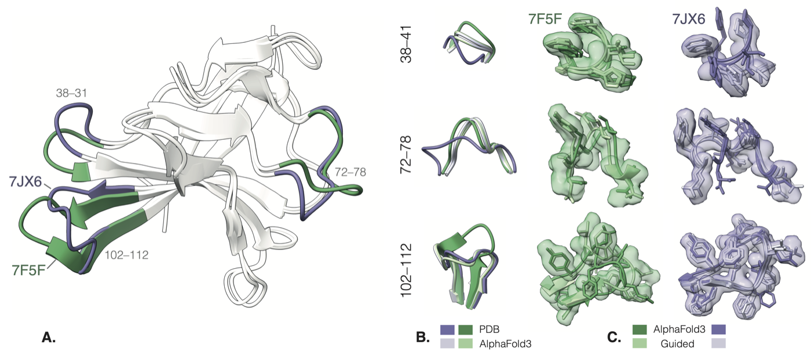
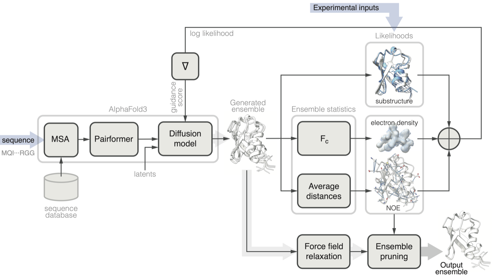
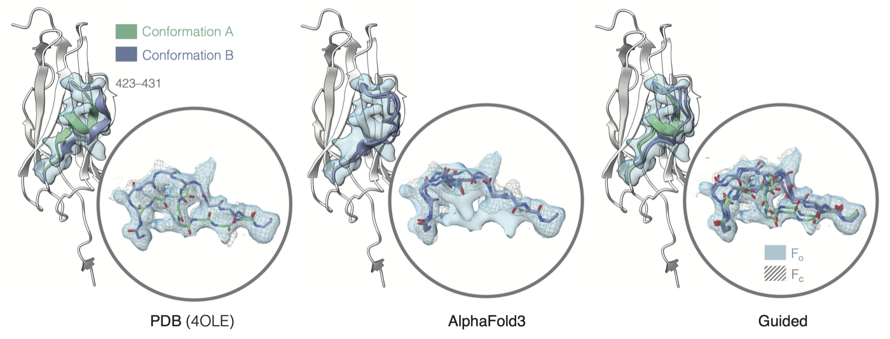
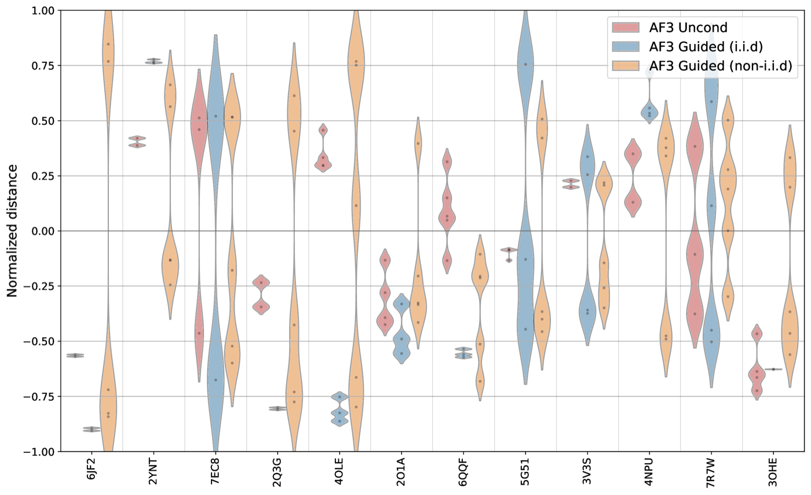
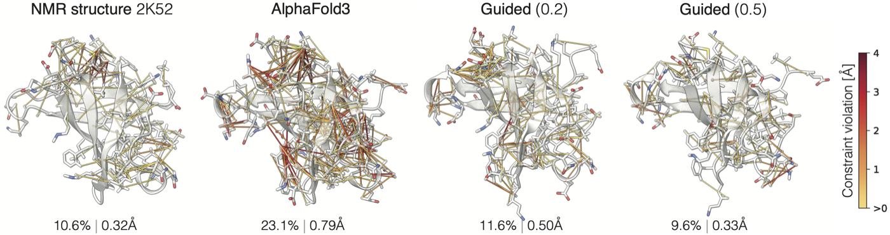

Experiment-guided AlphaFold
* Equal contribution in the ICML version.
- Problem
- Posterior sampling of protein ensembles given a sequence and experimental measurements.
- Prior
- AlphaFold3 diffusion module, run through Protenix, an open PyTorch reimplementation. Unguided baselines use the official AlphaFold3.
- Method
- Joint likelihood guidance of 16 samples and force-field relaxation. X-ray ensembles are then pruned to at most 5 structures.
- Evaluated on
- 91 NMR targets, X-ray altloc and refinement case studies, and cryo-EM complexes.
- Main caveat
- Ensembles explain the data under the prior. They are not calibrated thermodynamic populations.
- My contribution
- With Advaith Maddipatla, I ran the X-ray crystallography case studies. I implemented the electron density forward model and contributed to the open-source code.
Demos marked Illustration are small simulations of the idea and do not run our models. Results from the work itself are in the figures marked From our paper and in the charts and tables.
One project, several venues
- 2025 GEM workshop @ ICLR 2025 (Spotlight): Inverse problems with experiment-guided AlphaFold.
- 2025 ICML 2025: the full conference paper (arXiv:2502.09372).
- 2025 bioRxiv: Experiment-guided AlphaFold3 resolves accurate protein ensembles (preprint).
- 2026 Nature Biotechnology: Experiment-guided AlphaFold3 resolves measurement-consistent protein ensembles.
1. The problem: one sequence, many shapes
A protein is a chain of amino acids that folds into a 3D structure, and that structure largely determines what it does. But a protein is not a rigid object. Loops swing, side chains flip, and whole segments can switch between distinct arrangements. The right description is an ensemble: a collection of conformations.
AlphaFold changed structural biology by predicting structures from sequence with close to experimental accuracy. Its training objective, however, pushes it toward a single "most probable" structure, and it does not know the conditions of a particular experiment. Two nearly identical sequences crystallized differently can adopt different shapes, and AlphaFold3 will predict almost the same thing for both.

2. Experiments already measure ensembles
The major experimental methods do not photograph one molecule. They report averages over a huge number of them:
- X-ray crystallography gives an electron density map averaged over trillions of molecules in a crystal. Flexible regions appear blurred, and some regions show two clear alternate conformations (altlocs).
- NMR spectroscopy measures proteins in solution. NOE signals reveal which atoms are close, typically under about 6 Å, averaged over the ensemble and over time.
- Cryo-EM images frozen particles and reconstructs a 3D electrostatic potential map, which can be limited in resolution in flexible regions.
That creates a mismatch. The measurement describes a distribution, while the predictor returns something close to a point. Our goal is to close that gap.
3. Structure determination as an inverse problem
For readers from ML, this is a classic inverse problem. We know how to simulate the measurement from a structure (the forward model), and we want to go the other way. The data alone do not determine the answer, so we need a prior. Bayes' rule gives the recipe:
p(𝒳 | a, y) ∝ p(y | 𝒳, a) · p(𝒳 | a)
Here a is the sequence, y the experimental data, and 𝒳 = (X₁, …, Xₙ) an ensemble of structures. AlphaFold3 supplies the prior p(𝒳 | a), and the physics of the instrument supplies the likelihood p(y | 𝒳, a).
Each experiment becomes a differentiable log-likelihood term:
- Electron density: the L1 distance between the observed map and the mean density calculated from the ensemble.
- NOE restraints: a squared penalty when the linear ensemble-average distance between two atoms falls outside its measured bounds. This is a simplification, because the NOE signal scales roughly as r⁻⁶ and close conformers dominate it. A pair spending half its time at 3 Å and half at 9 Å has a linear average of 6 Å but an r⁻⁶ average of about 3.4 Å.
- Substructure: a quadratic penalty that holds known atoms in place, useful when refining only one segment.
4. Steering the diffusion sampler
AlphaFold3 generates coordinates with a diffusion model: it starts from noise and denoises step by step using a learned score. We run n copies at once and add one more force at every step, the gradient of the experimental log-likelihood:
score of each member (AlphaFold3) + η · ∇𝒳 log p(y | X₁, …, Xₙ, a)
The scale η interpolates between trusting the prior and trusting the data. Because the guidance happens only at sampling time, the AlphaFold3 network is never retrained.
Implementation details for practitioners
- Gradient. The likelihood gradient is taken with respect to the noisy coordinates of the whole ensemble, then rescaled to the norm of the denoising direction before being added with weight η. It is also clipped for numerical stability.
- Guidance scale. η = 0.1 for electron density and 0.3 for order parameters. For NOE guidance we tried values from 0.1 to 0.5 and kept the best-performing result.
- Density likelihood. An L1 (Laplace) term on the target region, plus a weak substructure term (λ = 0.1) that anchors the remaining atoms.
- Ensemble. n = 16 samples, with symmetry mates included in the density calculation.
Try it: from collapsed prior to measured ensemble Illustration
A one-dimensional cartoon, not the actual model. The prior puts almost all its weight on one conformation, while the experiment says a second conformation is substantially populated. Increase the guidance strength to move from the prior toward the measurement-consistent ensemble.
5. The full pipeline: guide, relax, prune

- Guided sampling draws a joint ensemble consistent with the data.
- Force-field relaxation. Strong guidance can overfit noise and produce broken bonds or clashes. We filter those samples and relax the rest with a standard AMBER force field, so the output is chemically plausible.
- Matching-pursuit selection (X-ray). We greedily keep the structure that most improves the fit, up to five structures, and stop early if R-free, the crystallographic validation loss, rises. The result is a small ensemble that still explains the data. The journal version also offers occupancy optimization as an alternative.
Try it: pruning an ensemble with matching pursuit Illustration
Fourteen candidate conformations sit on a line. Each click adds the one that most reduces the L1 error against the data. Notice that the selection stops by itself, with far fewer structures than it started with.
6. X-ray crystallography: finding what a single model misses
We tested density guidance on three kinds of heterogeneity that unguided AlphaFold3 consistently gets wrong: the same protein captured in different shapes across experiments, identical segments that fold differently in homologous proteins, and two conformations coexisting within a single crystal.
The last case is the most striking. In human NBR1 (PDB 4OLE), a nine-residue segment was modeled as two alternate conformations. AlphaFold3 predicts only one and misses the helix entirely. The guided ensemble recovers both.

Most of the gain in density fit comes from guidance itself. On the 12 altloc targets, mean cosine similarity is 0.723 unguided, 0.784 with independent guidance and 0.795 with joint guidance, which is higher than independent guidance in 11 of 12 cases. The clearer benefit of joint sampling, carried over from our earlier paper, is coverage: guiding each sample independently tends to leave the ensemble in one state, while guiding them together spreads it across the states that the density requires.

On an extended set of 15 targets, with segments of up to 22 residues, guidance improved the density fit over unguided AlphaFold3 in all 15. It matched or exceeded the deposited PDB model in 4 of 15. That is the expected pattern, since PDB models are carefully refined against these same maps. The journal version adds practical uses: filling loops missing from deposited models, recovering poorly predicted peptides, and guiding an entire chain iteratively.
7. NMR: accurate ensembles in minutes
NMR structures are usually computed with restrained molecular dynamics. Simulating conformers one at a time tends to give overly rigid ensembles, and simulating them jointly can take days even for a 76-residue protein like ubiquitin. NOE-guided AlphaFold3 takes minutes: about 8 minutes for the 16-member ensembles used here, on NVIDIA H100 or L40S hardware.

To test the dynamics with independent data, we compared ubiquitin ensembles with S² order parameters, which come from a separate type of NMR experiment and measure how much each backbone N–H bond moves. These values were not used for guidance in the first three rows below.
Bar length shows r. First three rows: ICML paper. * These two are fitted to dynamics data, so they measure fit and are not an independent check. Values from the Nature Biotechnology paper.
8. Cryo-EM, and combining experiments
The same recipe applies to cryo-EM by swapping the likelihood. On the insulin receptor, AlphaFold3 tends to make the two halves too symmetric; map guidance produces conformations that agree with both the symmetric and asymmetric states. On an amyloid-beta fibril, where AlphaFold3 mispredicts the dimer interface, guidance agrees with the density.
Because log-likelihoods add, experiments can be combined. For the human RIPK3 amyloid fibril, guiding with the cryo-EM map alone improved the density fit but left the local geometry poor. Adding NMR-derived restraints significantly improved local accuracy, at a reasonable cost in density fit.
9. How to read these results
- Fit is not validation. NOE violations and density agreement are computed on the same data used for guidance, so improvement over unguided sampling is partly expected. The NOE guidance scale was also chosen per target by best result, and R-free is used to stop X-ray pruning, so neither is a fully held-out measure.
- The PDB comparison favors the guided objective. The 70-of-91 result scores restraints on the ensemble average, which is what guidance optimizes. Deposited NMR bundles are generally calculated so that each conformer satisfies the restraints, so this comparison does not show that guided ensembles are more accurate structures.
- Independent evidence. The stronger checks use data that guidance did not see: S² order parameters (r = 0.72 vs. 0.47 for AlphaFold3 on ubiquitin), and ANSURR, which compares model rigidity with chemical shifts. Against deposited PDB ensembles, guided ensembles improved the ANSURR RMSD score in 92% of cases, but the correlation score in only 54%.
- The PDB is a reference, not ground truth. Deposited models are themselves fits to the data, and for X-ray they often include manually placed waters and ions that our models lack.
- Other generative baselines. The papers also compare against AlphaFlow, ESMFlow and, in the journal supplement, BioEmu and AFCluster.
What changed from our first paper
This project continues our earlier paper on crystallographic ensembles, which used the Chroma diffusion model as its prior. The core idea, joint guidance through a shared likelihood, stays the same. Almost everything around it changes:
| Aspect | First paper (2024, Chroma prior) | This work |
|---|---|---|
| Prior | Chroma backbone diffusion, plus a side-chain packer | AlphaFold3 (via Protenix), all-atom |
| Sequence | Backbone sampler is not sequence-conditioned | Sequence-conditioned prior |
| Experimental observations | X-ray density | X-ray, NMR, cryo-EM and combinations |
| Density likelihood | L2 (Gaussian) | L1 (Laplace) |
| Target size | Altloc regions of 3–11 residues, with the rest held fixed | Regions up to 22 residues, plus iterative whole-chain guidance |
| After sampling | Matching pursuit | Force-field relaxation, plus X-ray pruning with a validation stop |
| Evaluation | Altloc case studies | 91 NMR targets, plus X-ray and cryo-EM case studies |
The gain is mainly generality. On the same 12 X-ray altloc targets, guided AlphaFold3 had the higher density agreement in 7 or 8, tied in 2, and guided Chroma was higher in 2 or 3 (mean cosine similarity 0.793–0.795 vs. 0.788). The ranges reflect two different values reported for 6JF2 in the ICML appendix. So the stronger prior does not dramatically improve the fit on short segments. What it adds is sequence conditioning, longer regions, and data types that Chroma could not handle well.
How this differs from prior work
Fadini et al. fit a single conformer to density by optimizing AlphaFold's MSA input. Levy et al. solve inverse problems with a Chroma prior but evaluate on synthetic data. Learned ensemble generators such as AlphaFlow do not condition on a specific experiment. Here, a sequence-conditioned all-atom prior is guided jointly by real measurements from several modalities.
10. Limitations and what comes next
- Ensembles are explanations, not populations. They explain the data under the AlphaFold3 prior. Their mixture weights should not be read as calibrated thermodynamic populations. The journal supplement takes a first step with force-field energy reweighting.
- Guidance can overfit. Strength must be controlled, especially with low-resolution or poorly phased maps.
- Simplified NOE averaging. The NOE term averages distances linearly and not as r⁻⁶, so it can misjudge restraints in strongly heterogeneous ensembles.
- Mainly proteins so far. Ligands, metals, modifications, structural waters and complex symmetries remain limited.
- Next: linking ensemble weights to real populations, and large-scale re-analysis of existing experimental data.
Takeaways
- A strong predictor is also a prior. A pretrained model can solve new inverse problems with no retraining.
- When the measurement is an average, sample jointly. Guiding samples independently optimizes a different objective from the one the instrument defines.
- Composable likelihoods are powerful. New data types only need a differentiable forward model.
Glossary
Show the glossary
- Conformation: one particular 3D arrangement of a protein.
- Ensemble: a set of conformations that together describe a flexible protein.
- Altloc: an alternate location modeled for atoms in a crystal structure.
- Electron density: the 3D map of electrons reconstructed from X-ray diffraction.
- NOE: an NMR effect that reports which atoms are close in space.
- S² order parameter: an NMR measure of how rigid a bond is, where 1 means fully rigid.
- PDB: the Protein Data Bank, the public archive of experimental structures.
How the versions differ
The workshop and ICML versions introduce the inverse-problem formulation and demonstrate it on crystallographic densities and NMR. The journal version adds cryo-EM and joint multi-modal guidance, S² and other dynamics data as guidance terms, a 91-target NMR benchmark, and energy-based reweighting.
Code and citation
Code: github.com/sai-advaith/guided_alphafold (archived version: Zenodo). Structures and metrics: doi.org/10.7910/DVN/PLYUHN.
BibTeX
@article{maddipatla2026experiment,
title = {Experiment-guided {AlphaFold3} resolves measurement-consistent protein ensembles},
author = {Maddipatla, Advaith and Sellam Bojan, Nadav and Bojan, Meital and Masalitin, Volodymyr and
Vedula, Sanketh and Schanda, Paul and Marx, Ailie and Bronstein, Alex M.},
journal = {Nature Biotechnology},
year = {2026},
doi = {10.1038/s41587-026-03166-5}
}
@inproceedings{maddipatla2025inverse,
title = {Inverse problems with experiment-guided {AlphaFold}},
author = {Maddipatla, Advaith and Sellam, Nadav Bojan and Bojan, Meital and
Vedula, Sanketh and Schanda, Paul and Marx, Ailie and Bronstein, Alex M.},
booktitle = {Proceedings of the 42nd International Conference on Machine Learning},
series = {PMLR},
volume = {267},
year = {2025}
}